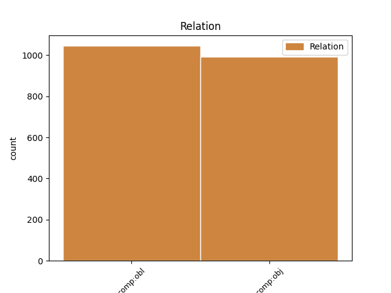

Distribution of features within this leaf

Agreement Rules sorted by frequency.
- When the dependent token is the direct object complements(comp:obj) of the head token, and the head token is VERB and the dependent token is NOUN.
1 De _ _ _ _ 0 _ _ _
2 Graecis _ _ _ _ 0 _ _ _
3 autem _ _ _ _ 0 _ _ _
4 dulcem _ _ _ _ 0 _ _ _
5 et _ _ _ _ 0 _ _ _
6 facetum _ _ _ _ 0 _ _ _
7 festivi _ _ _ _ 0 _ _ _
8 que _ _ _ _ 0 _ _ _
9 sermonis _ _ _ _ 0 _ _ _
10 atque _ _ _ _ 0 _ _ _
11 in _ _ _ _ 0 _ _ _
12 omni _ _ _ _ 0 _ _ _
13 oratione _ _ _ _ 0 _ _ _
14 simulatorem _ _ _ _ 0 _ _ _
15 quem _ _ _ _ 0 _ _ _
16 εἴρωνα _ _ _ _ 0 _ _ _
17 Graeci _ _ _ _ 0 _ _ _
18 nominarunt _ _ _ _ 0 _ _ _
19 Socratem _ _ _ _ 0 _ _ _
20 accepimus _ _ _ _ 0 _ _ _
21 contra _ _ _ _ 0 _ _ _
22 Pythagoram _ _ _ _ 0 _ _ _
23 et _ _ _ _ 0 _ _ _
24 Periclem _ _ _ _ 0 _ _ _
25 summam _ _ _ _ 0 _ _ _
26 auctoritatem auctoritas NOUN Nb Case=Acc|Gender=Fem|Number=Sing 27 comp:obj _ ref=1.108
27 consecutos consequor VERB V- Aspect=Perf|Case=Acc|Gender=Masc|Number=Plur|Tense=Past|VerbForm=Part|Voice=Pass 0 _ _ _
28 sine _ _ _ _ 0 _ _ _
29 ulla _ _ _ _ 0 _ _ _
30 hilaritate _ _ _ _ 0 _ _ _
1 Se _ _ _ _ 0 _ _ _
2 id is PRON Pp Case=Acc|Gender=Neut|Number=Sing|Person=3|PronType=Prs 7 comp:obj _ ref=2.32.2
3 quod _ _ _ _ 0 _ _ _
4 in _ _ _ _ 0 _ _ _
5 Nerviis _ _ _ _ 0 _ _ _
6 fecisset _ _ _ _ 0 _ _ _
7 facturum facio VERB V- Case=Acc|Gender=Masc|Number=Sing|Tense=Fut|VerbForm=Part|Voice=Act 0 _ _ _
8 finitimis _ _ _ _ 0 _ _ _
9 que _ _ _ _ 0 _ _ _
10 imperaturum _ _ _ _ 0 _ _ _
11 ne _ _ _ _ 0 _ _ _
12 quam _ _ _ _ 0 _ _ _
13 dediticiis _ _ _ _ 0 _ _ _
14 populi _ _ _ _ 0 _ _ _
15 Romani _ _ _ _ 0 _ _ _
16 iniuriam _ _ _ _ 0 _ _ _
17 inferrent _ _ _ _ 0 _ _ _
1 Haec _ _ _ _ 0 _ _ _
2 sibi se PRON Pk Case=Dat|Gender=Masc|Number=Sing|Person=3|PronType=Prs|Reflex=Yes 4 comp:obl _ ref=1.40.11
3 esse _ _ _ _ 0 _ _ _
4 curae cura NOUN Nb Case=Dat|Gender=Fem|Number=Sing 0 _ _ _
1 Sed _ _ _ _ 0 _ _ _
2 tum _ _ _ _ 0 _ _ _
3 servare _ _ _ _ 0 _ _ _
4 illud _ _ _ _ 0 _ _ _
5 poëtas _ _ _ _ 0 _ _ _
6 quod _ _ _ _ 0 _ _ _
7 deceat _ _ _ _ 0 _ _ _
8 dicimus _ _ _ _ 0 _ _ _
9 cum _ _ _ _ 0 _ _ _
10 id _ _ _ _ 0 _ _ _
11 quod _ _ _ _ 0 _ _ _
12 quaque _ _ _ _ 0 _ _ _
13 persona _ _ _ _ 0 _ _ _
14 dignum _ _ _ _ 0 _ _ _
15 est _ _ _ _ 0 _ _ _
16 et _ _ _ _ 0 _ _ _
17 fit _ _ _ _ 0 _ _ _
18 et _ _ _ _ 0 _ _ _
19 dicitur _ _ _ _ 0 _ _ _
20 ut _ _ _ _ 0 _ _ _
21 si _ _ _ _ 0 _ _ _
22 Aeacus _ _ _ _ 0 _ _ _
23 aut _ _ _ _ 0 _ _ _
24 Minos _ _ _ _ 0 _ _ _
25 diceret _ _ _ _ 0 _ _ _
26 óderint _ _ _ _ 0 _ _ _
27 dum _ _ _ _ 0 _ _ _
28 métuant _ _ _ _ 0 _ _ _
29 aut _ _ _ _ 0 _ _ _
30 natís natus NOUN Nb Case=Dat|Gender=Masc|Number=Plur 31 comp:obl _ ref=1.97
31 sepulchro sepulcrum NOUN Nb Case=Dat|Gender=Neut|Number=Sing 0 _ _ _
32 ipse _ _ _ _ 0 _ _ _
33 ést _ _ _ _ 0 _ _ _
34 parens _ _ _ _ 0 _ _ _
35 indecorum _ _ _ _ 0 _ _ _
36 videretur _ _ _ _ 0 _ _ _
37 quod _ _ _ _ 0 _ _ _
38 eos _ _ _ _ 0 _ _ _
39 fuisse _ _ _ _ 0 _ _ _
40 iustos _ _ _ _ 0 _ _ _
41 accepimus _ _ _ _ 0 _ _ _
1 itaque _ _ _ _ 0 _ _ _
2 et _ _ _ _ 0 _ _ _
3 Graeci _ _ _ _ 0 _ _ _
4 solvunt _ _ _ _ 0 _ _ _
5 tolerabili _ _ _ _ 0 _ _ _
6 faenore _ _ _ _ 0 _ _ _
7 et _ _ _ _ 0 _ _ _
8 publicanis _ _ _ _ 0 _ _ _
9 res _ _ _ _ 0 _ _ _
10 est _ _ _ _ 0 _ _ _
11 gratissima _ _ _ _ 0 _ _ _
12 si _ _ _ _ 0 _ _ _
13 illa _ _ _ _ 0 _ _ _
14 iam _ _ _ _ 0 _ _ _
15 habent _ _ _ _ 0 _ _ _
16 pleno _ _ _ _ 0 _ _ _
17 modio _ _ _ _ 0 _ _ _
18 verborum _ _ _ _ 0 _ _ _
19 honorem honor NOUN Nb Case=Acc|Gender=Masc|Number=Sing 20 comp:obj _ ref=6.1.16
20 invitationem invitatio NOUN Nb Case=Acc|Gender=Fem|Number=Sing 0 _ _ _
21 crebram _ _ _ _ 0 _ _ _
1 ex _ _ _ _ 0 _ _ _
2 quibus _ _ _ _ 0 _ _ _
3 quae _ _ _ _ 0 _ _ _
4 maxime _ _ _ _ 0 _ _ _
5 differant _ _ _ _ 0 _ _ _
6 a _ _ _ _ 0 _ _ _
7 ceteris _ _ _ _ 0 _ _ _
8 et _ _ _ _ 0 _ _ _
9 memoriae memoria NOUN Nb Case=Nom|Gender=Fem|Number=Plur 10 comp:obl _ ref=6.25.5
10 prodenda prodo VERB V- Case=Nom|Gender=Neut|Number=Plur|VerbForm=Gdv 0 _ _ _
11 videantur _ _ _ _ 0 _ _ _
12 haec _ _ _ _ 0 _ _ _
13 sunt _ _ _ _ 0 _ _ _
1 princeps _ _ _ _ 0 _ _ _
2 autem _ _ _ _ 0 _ _ _
3 sacerdotum _ _ _ _ 0 _ _ _
4 Ananias _ _ _ _ 0 _ _ _
5 praecepit _ _ _ _ 0 _ _ _
6 adstantibus asto VERB V- Case=Dat|Gender=Masc|Number=Plur|Tense=Pres|VerbForm=Part|Voice=Act 0 _ _ _
7 sibi se PRON Pk Case=Dat|Gender=Masc|Number=Plur|Person=3|PronType=Prs|Reflex=Yes 6 comp:obl _ ref=ACTS_23.2
8 percutere _ _ _ _ 0 _ _ _
9 os _ _ _ _ 0 _ _ _
10 eius _ _ _ _ 0 _ _ _
1 vos _ _ _ _ 0 _ _ _
2 vero _ _ _ _ 0 _ _ _
3 quem quis PRON Pi Case=Acc|Gender=Masc|Number=Sing|PronType=Int 0 _ _ _
4 me ego PRON Pp Case=Acc|Gender=Fem,Masc|Number=Sing|Person=1|PronType=Prs 3 comp:obj _ ref=MARK_8.29
5 dicitis _ _ _ _ 0 _ _ _
6 esse _ _ _ _ 0 _ _ _
1 et _ _ _ _ 0 _ _ _
2 vidit _ _ _ _ 0 _ _ _
3 duos _ _ _ _ 0 _ _ _
4 angelos _ _ _ _ 0 _ _ _
5 in _ _ _ _ 0 _ _ _
6 albis _ _ _ _ 0 _ _ _
7 sedentes _ _ _ _ 0 _ _ _
8 unum _ _ _ _ 0 _ _ _
9 ad _ _ _ _ 0 _ _ _
10 caput _ _ _ _ 0 _ _ _
11 et _ _ _ _ 0 _ _ _
12 unum unus NUM Ma Case=Acc|Gender=Masc|Number=Sing 14 comp:obj _ ref=JOHN_20.12
13 ad _ _ _ _ 0 _ _ _
14 pedes pes NOUN Nb Case=Acc|Gender=Masc|Number=Plur 0 _ _ _
15 ubi _ _ _ _ 0 _ _ _
16 positum _ _ _ _ 0 _ _ _
17 fuerat _ _ _ _ 0 _ _ _
18 corpus _ _ _ _ 0 _ _ _
19 Iesu _ _ _ _ 0 _ _ _
1 in _ _ _ _ 0 _ _ _
2 te tu PRON Pp Case=Acc|Gender=Masc|Number=Sing|Person=2|PronType=Prs 0 _ _ _
3 autem _ _ _ _ 0 _ _ _
4 bonitatem bonitas NOUN Nb Case=Acc|Gender=Fem|Number=Sing 2 comp:obj _ ref=ROM_11.22
5 Dei _ _ _ _ 0 _ _ _
6 si _ _ _ _ 0 _ _ _
7 permanseris _ _ _ _ 0 _ _ _
8 in _ _ _ _ 0 _ _ _
9 bonitate _ _ _ _ 0 _ _ _
1 credibile credibilis ADJ A- Case=Nom|Degree=Pos|Gender=Neut|Number=Sing 0 _ _ _
2 non _ _ _ _ 0 _ _ _
3 est _ _ _ _ 0 _ _ _
4 quantum _ _ _ _ 0 _ _ _
5 ego ego PRON Pp Case=Nom|Gender=Masc|Number=Sing|Person=1|PronType=Prs 1 comp:obj _ ref=2.23.3
6 in _ _ _ _ 0 _ _ _
7 consiliis _ _ _ _ 0 _ _ _
8 et _ _ _ _ 0 _ _ _
9 prudentia _ _ _ _ 0 _ _ _
10 tua _ _ _ _ 0 _ _ _
11 quod _ _ _ _ 0 _ _ _
12 que _ _ _ _ 0 _ _ _
13 maximum _ _ _ _ 0 _ _ _
14 est _ _ _ _ 0 _ _ _
15 quantum _ _ _ _ 0 _ _ _
16 in _ _ _ _ 0 _ _ _
17 amore _ _ _ _ 0 _ _ _
18 et _ _ _ _ 0 _ _ _
19 fide _ _ _ _ 0 _ _ _
20 ponam _ _ _ _ 0 _ _ _
1 sicut _ _ _ _ 0 _ _ _
2 est _ _ _ _ 0 _ _ _
3 mihi _ _ _ _ 0 _ _ _
4 iustum _ _ _ _ 0 _ _ _
5 hoc _ _ _ _ 0 _ _ _
6 sentire _ _ _ _ 0 _ _ _
7 pro _ _ _ _ 0 _ _ _
8 omnibus _ _ _ _ 0 _ _ _
9 vobis _ _ _ _ 0 _ _ _
10 eo _ _ _ _ 0 _ _ _
11 quod _ _ _ _ 0 _ _ _
12 habeam _ _ _ _ 0 _ _ _
13 in _ _ _ _ 0 _ _ _
14 corde _ _ _ _ 0 _ _ _
15 vos _ _ _ _ 0 _ _ _
16 et _ _ _ _ 0 _ _ _
17 in _ _ _ _ 0 _ _ _
18 vinculis _ _ _ _ 0 _ _ _
19 meis _ _ _ _ 0 _ _ _
20 et _ _ _ _ 0 _ _ _
21 in _ _ _ _ 0 _ _ _
22 defensione _ _ _ _ 0 _ _ _
23 et _ _ _ _ 0 _ _ _
24 confirmatione _ _ _ _ 0 _ _ _
25 evangelii _ _ _ _ 0 _ _ _
26 socios socius NOUN Nb Case=Acc|Gender=Masc|Number=Plur 0 _ _ _
27 gaudii _ _ _ _ 0 _ _ _
28 mei _ _ _ _ 0 _ _ _
29 omnes _ _ _ _ 0 _ _ _
30 vos vos PRON Pp Case=Acc|Gender=Masc|Number=Plur|Person=2|PronType=Prs 26 comp:obj _ ref=PHIL_1.7
31 esse _ _ _ _ 0 _ _ _
1 Quamquam _ _ _ _ 0 _ _ _
2 te _ _ _ _ 0 _ _ _
3 Marce _ _ _ _ 0 _ _ _
4 fili _ _ _ _ 0 _ _ _
5 annum _ _ _ _ 0 _ _ _
6 iam _ _ _ _ 0 _ _ _
7 audientem audio VERB V- Case=Acc|Gender=Masc|Number=Sing|Tense=Pres|VerbForm=Part|Voice=Act 0 _ _ _
8 Cratippum Cratippus PROPN Ne Case=Acc|Gender=Masc|Number=Sing 7 comp:obj _ ref=1.1
9 id _ _ _ _ 0 _ _ _
10 que _ _ _ _ 0 _ _ _
11 Athenis _ _ _ _ 0 _ _ _
12 abundare _ _ _ _ 0 _ _ _
13 oportet _ _ _ _ 0 _ _ _
14 praeceptis _ _ _ _ 0 _ _ _
15 institutis _ _ _ _ 0 _ _ _
16 que _ _ _ _ 0 _ _ _
17 philosophiae _ _ _ _ 0 _ _ _
18 propter _ _ _ _ 0 _ _ _
19 summam _ _ _ _ 0 _ _ _
20 et _ _ _ _ 0 _ _ _
21 doctoris _ _ _ _ 0 _ _ _
22 auctoritatem _ _ _ _ 0 _ _ _
23 et _ _ _ _ 0 _ _ _
24 urbis _ _ _ _ 0 _ _ _
25 quorum _ _ _ _ 0 _ _ _
26 alter _ _ _ _ 0 _ _ _
27 te _ _ _ _ 0 _ _ _
28 scientia _ _ _ _ 0 _ _ _
29 augere _ _ _ _ 0 _ _ _
30 potest _ _ _ _ 0 _ _ _
31 altera _ _ _ _ 0 _ _ _
32 exemplis _ _ _ _ 0 _ _ _
33 tamen _ _ _ _ 0 _ _ _
34 ut _ _ _ _ 0 _ _ _
35 ipse _ _ _ _ 0 _ _ _
36 ad _ _ _ _ 0 _ _ _
37 meam _ _ _ _ 0 _ _ _
38 utilitatem _ _ _ _ 0 _ _ _
39 semper _ _ _ _ 0 _ _ _
40 cum _ _ _ _ 0 _ _ _
41 Graecis _ _ _ _ 0 _ _ _
42 Latina _ _ _ _ 0 _ _ _
43 coniunxi _ _ _ _ 0 _ _ _
44 ne _ _ _ _ 0 _ _ _
45 que _ _ _ _ 0 _ _ _
46 id _ _ _ _ 0 _ _ _
47 in _ _ _ _ 0 _ _ _
48 philosophia _ _ _ _ 0 _ _ _
49 solum _ _ _ _ 0 _ _ _
50 sed _ _ _ _ 0 _ _ _
51 etiam _ _ _ _ 0 _ _ _
52 in _ _ _ _ 0 _ _ _
53 dicendi _ _ _ _ 0 _ _ _
54 exercitatione _ _ _ _ 0 _ _ _
55 feci _ _ _ _ 0 _ _ _
56 idem _ _ _ _ 0 _ _ _
57 tibi _ _ _ _ 0 _ _ _
58 censeo _ _ _ _ 0 _ _ _
59 faciendum _ _ _ _ 0 _ _ _
60 ut _ _ _ _ 0 _ _ _
61 par _ _ _ _ 0 _ _ _
62 sis _ _ _ _ 0 _ _ _
63 in _ _ _ _ 0 _ _ _
64 utriusque _ _ _ _ 0 _ _ _
65 orationis _ _ _ _ 0 _ _ _
66 facultate _ _ _ _ 0 _ _ _
1 Ita _ _ _ _ 0 _ _ _
2 quam _ _ _ _ 0 _ _ _
3 ille _ _ _ _ 0 _ _ _
4 triplicem triplex ADJ A- Case=Acc|Degree=Pos|Gender=Fem,Masc|Number=Sing 0 _ _ _
5 putavit _ _ _ _ 0 _ _ _
6 esse _ _ _ _ 0 _ _ _
7 rationem ratio NOUN Nb Case=Acc|Gender=Fem|Number=Sing 4 comp:obj _ ref=1.10
8 in _ _ _ _ 0 _ _ _
9 quinque _ _ _ _ 0 _ _ _
10 partes _ _ _ _ 0 _ _ _
11 distribui _ _ _ _ 0 _ _ _
12 debere _ _ _ _ 0 _ _ _
13 reperitur _ _ _ _ 0 _ _ _
1 His _ _ _ _ 0 _ _ _
2 rebus _ _ _ _ 0 _ _ _
3 gestis _ _ _ _ 0 _ _ _
4 omni _ _ _ _ 0 _ _ _
5 Gallia _ _ _ _ 0 _ _ _
6 pacata _ _ _ _ 0 _ _ _
7 tanta _ _ _ _ 0 _ _ _
8 huius _ _ _ _ 0 _ _ _
9 belli _ _ _ _ 0 _ _ _
10 ad _ _ _ _ 0 _ _ _
11 barbaros _ _ _ _ 0 _ _ _
12 opinio _ _ _ _ 0 _ _ _
13 perlata _ _ _ _ 0 _ _ _
14 est _ _ _ _ 0 _ _ _
15 uti _ _ _ _ 0 _ _ _
16 ab _ _ _ _ 0 _ _ _
17 iis _ _ _ _ 0 _ _ _
18 nationibus _ _ _ _ 0 _ _ _
19 quae _ _ _ _ 0 _ _ _
20 trans _ _ _ _ 0 _ _ _
21 Rhenum _ _ _ _ 0 _ _ _
22 incolerent _ _ _ _ 0 _ _ _
23 legationes _ _ _ _ 0 _ _ _
24 ad _ _ _ _ 0 _ _ _
25 Caesarem _ _ _ _ 0 _ _ _
26 mitterentur _ _ _ _ 0 _ _ _
27 quae _ _ _ _ 0 _ _ _
28 se _ _ _ _ 0 _ _ _
29 obsides _ _ _ _ 0 _ _ _
30 daturas _ _ _ _ 0 _ _ _
31 imperata impero VERB V- Aspect=Perf|Case=Acc|Gender=Neut|Number=Plur|Tense=Past|VerbForm=Part|Voice=Pass 32 comp:obj _ ref=2.35.1
32 facturas facio VERB V- Case=Acc|Gender=Fem|Number=Plur|Tense=Fut|VerbForm=Part|Voice=Act 0 _ _ _
33 pollicerentur _ _ _ _ 0 _ _ _
1 Paulum Paulus PROPN Ne Case=Acc|Gender=Masc|Number=Sing 3 comp:obj _ ref=ACTS_14.11
2 vero _ _ _ _ 0 _ _ _
3 Mercurium Mercurius PROPN Ne Case=Acc|Gender=Masc|Number=Sing 0 _ _ _
1 et _ _ _ _ 0 _ _ _
2 nihil _ _ _ _ 0 _ _ _
3 eorum _ _ _ _ 0 _ _ _
4 Gallioni Gallio PROPN Ne Case=Dat|Gender=Masc|Number=Sing 5 comp:obl _ ref=ACTS_18.17
5 curae cura NOUN Nb Case=Dat|Gender=Fem|Number=Sing 0 _ _ _
6 erat _ _ _ _ 0 _ _ _
1 et _ _ _ _ 0 _ _ _
2 non _ _ _ _ 0 _ _ _
3 sicut _ _ _ _ 0 _ _ _
4 per _ _ _ _ 0 _ _ _
5 unum unus NUM Ma Case=Acc|Gender=Neut|Number=Sing 6 comp:obj _ ref=ROM_5.16
6 peccantem pecco VERB V- Case=Acc|Gender=Masc|Number=Sing|Tense=Pres|VerbForm=Part|Voice=Act 0 _ _ _
7 ita _ _ _ _ 0 _ _ _
8 et _ _ _ _ 0 _ _ _
9 donum _ _ _ _ 0 _ _ _
1 non _ _ _ _ 0 _ _ _
2 enim _ _ _ _ 0 _ _ _
3 iudicavi _ _ _ _ 0 _ _ _
4 scire _ _ _ _ 0 _ _ _
5 me _ _ _ _ 0 _ _ _
6 aliquid _ _ _ _ 0 _ _ _
7 inter _ _ _ _ 0 _ _ _
8 vos _ _ _ _ 0 _ _ _
9 nisi _ _ _ _ 0 _ _ _
10 Iesum Iesus PROPN Ne Case=Acc|Gender=Masc|Number=Sing 0 _ _ _
11 Christum _ _ _ _ 0 _ _ _
12 et _ _ _ _ 0 _ _ _
13 hunc _ _ _ _ 0 _ _ _
14 crucifixum crucifigo VERB V- Aspect=Perf|Case=Acc|Gender=Masc|Number=Sing|Tense=Past|VerbForm=Part|Voice=Pass 10 comp:obj _ ref=1COR_2.2
1 congregamini _ _ _ _ 0 _ _ _
2 ad _ _ _ _ 0 _ _ _
3 cenam _ _ _ _ 0 _ _ _
4 magnam _ _ _ _ 0 _ _ _
5 Dei _ _ _ _ 0 _ _ _
6 ut _ _ _ _ 0 _ _ _
7 manducetis _ _ _ _ 0 _ _ _
8 carnes _ _ _ _ 0 _ _ _
9 regum _ _ _ _ 0 _ _ _
10 et _ _ _ _ 0 _ _ _
11 carnes _ _ _ _ 0 _ _ _
12 tribunorum _ _ _ _ 0 _ _ _
13 et _ _ _ _ 0 _ _ _
14 carnes _ _ _ _ 0 _ _ _
15 fortium _ _ _ _ 0 _ _ _
16 et _ _ _ _ 0 _ _ _
17 carnes _ _ _ _ 0 _ _ _
18 equorum equus NOUN Nb Case=Gen|Gender=Masc|Number=Plur 0 _ _ _
19 et _ _ _ _ 0 _ _ _
20 sedentium sedeo VERB V- Case=Gen|Gender=Masc|Number=Plur|Tense=Pres|VerbForm=Part|Voice=Act 18 comp:obj _ ref=REV_19.18
21 in _ _ _ _ 0 _ _ _
22 ipsis _ _ _ _ 0 _ _ _
23 et _ _ _ _ 0 _ _ _
24 carnes _ _ _ _ 0 _ _ _
25 omnium _ _ _ _ 0 _ _ _
26 liberorum _ _ _ _ 0 _ _ _
27 ac _ _ _ _ 0 _ _ _
28 servorum _ _ _ _ 0 _ _ _
29 et _ _ _ _ 0 _ _ _
30 pusillorum _ _ _ _ 0 _ _ _
31 ac _ _ _ _ 0 _ _ _
32 magnorum _ _ _ _ 0 _ _ _
1 is _ _ _ _ 0 _ _ _
2 cum _ _ _ _ 0 _ _ _
3 venisset _ _ _ _ 0 _ _ _
4 Romam Roma PROPN Ne Case=Acc|Gender=Fem|Number=Sing 9 comp:obl _ ref=4.11.1
5 eum _ _ _ _ 0 _ _ _
6 et _ _ _ _ 0 _ _ _
7 se _ _ _ _ 0 _ _ _
8 statim _ _ _ _ 0 _ _ _
9 venturos venio VERB V- Case=Acc|Gender=Masc|Number=Plur|Tense=Fut|VerbForm=Part|Voice=Act 0 _ _ _
10 ut _ _ _ _ 0 _ _ _
11 rationes _ _ _ _ 0 _ _ _
12 cum _ _ _ _ 0 _ _ _
13 publicanis _ _ _ _ 0 _ _ _
14 putarent _ _ _ _ 0 _ _ _
1 Quare _ _ _ _ 0 _ _ _
2 cum _ _ _ _ 0 _ _ _
3 hoc _ _ _ _ 0 _ _ _
4 commune _ _ _ _ 0 _ _ _
5 sit _ _ _ _ 0 _ _ _
6 potentiae potentia NOUN Nb Case=Gen|Gender=Fem|Number=Sing 7 comp:obl _ ref=1.70
7 cupidorum cupidus ADJ A- Case=Gen|Degree=Pos|Gender=Masc|Number=Plur 0 _ _ _
8 cum _ _ _ _ 0 _ _ _
9 iis _ _ _ _ 0 _ _ _
10 quos _ _ _ _ 0 _ _ _
11 dixi _ _ _ _ 0 _ _ _
12 otiosis _ _ _ _ 0 _ _ _
13 alteri _ _ _ _ 0 _ _ _
14 se _ _ _ _ 0 _ _ _
15 adipisci _ _ _ _ 0 _ _ _
16 id _ _ _ _ 0 _ _ _
17 posse _ _ _ _ 0 _ _ _
18 arbitrantur _ _ _ _ 0 _ _ _
19 si _ _ _ _ 0 _ _ _
20 opes _ _ _ _ 0 _ _ _
21 magnas _ _ _ _ 0 _ _ _
22 habeant _ _ _ _ 0 _ _ _
23 alteri _ _ _ _ 0 _ _ _
24 si _ _ _ _ 0 _ _ _
25 contenti _ _ _ _ 0 _ _ _
26 sint _ _ _ _ 0 _ _ _
27 et _ _ _ _ 0 _ _ _
28 suo _ _ _ _ 0 _ _ _
29 et _ _ _ _ 0 _ _ _
30 parvo _ _ _ _ 0 _ _ _
Disagree Examples:
1 haec _ _ _ _ 0 _ _ _
2 autem _ _ _ _ 0 _ _ _
3 eo _ _ _ _ 0 _ _ _
4 cogitante _ _ _ _ 0 _ _ _
5 ecce _ _ _ _ 0 _ _ _
6 angelus _ _ _ _ 0 _ _ _
7 Domini _ _ _ _ 0 _ _ _
8 in _ _ _ _ 0 _ _ _
9 somnis _ _ _ _ 0 _ _ _
10 apparuit _ _ _ _ 0 _ _ _
11 ei is PRON Pp Case=Dat|Gender=Masc|Number=Sing|Person=3|PronType=Prs 12 comp:obl _ ref=MATT_1.20
12 dicens dico VERB V- Case=Nom|Gender=Masc|Number=Sing|Tense=Pres|VerbForm=Part|Voice=Act 0 _ _ _
1 et _ _ _ _ 0 _ _ _
2 congregans congrego VERB V- Case=Nom|Gender=Masc|Number=Sing|Tense=Pres|VerbForm=Part|Voice=Act 0 _ _ _
3 omnes _ _ _ _ 0 _ _ _
4 principes princeps NOUN Nb Case=Acc|Gender=Masc|Number=Plur 2 comp:obj _ ref=MATT_2.4
5 sacerdotum _ _ _ _ 0 _ _ _
6 et _ _ _ _ 0 _ _ _
7 scribas _ _ _ _ 0 _ _ _
8 populi _ _ _ _ 0 _ _ _
9 sciscitabatur _ _ _ _ 0 _ _ _
10 ab _ _ _ _ 0 _ _ _
11 eis _ _ _ _ 0 _ _ _
12 ubi _ _ _ _ 0 _ _ _
13 Christus _ _ _ _ 0 _ _ _
14 nasceretur _ _ _ _ 0 _ _ _
1 videntes video VERB V- Case=Nom|Gender=Masc|Number=Plur|Tense=Pres|VerbForm=Part|Voice=Act 0 _ _ _
2 autem _ _ _ _ 0 _ _ _
3 stellam stella NOUN Nb Case=Acc|Gender=Fem|Number=Sing 1 comp:obj _ ref=MATT_2.10
4 gavisi _ _ _ _ 0 _ _ _
5 sunt _ _ _ _ 0 _ _ _
6 gaudio _ _ _ _ 0 _ _ _
7 magno _ _ _ _ 0 _ _ _
8 valde _ _ _ _ 0 _ _ _
1 et _ _ _ _ 0 _ _ _
2 intrantes intro VERB V- Case=Nom|Gender=Masc|Number=Plur|Tense=Pres|VerbForm=Part|Voice=Act 0 _ _ _
3 domum domus NOUN Nb Case=Acc|Gender=Fem|Number=Sing 2 comp:obl _ ref=MATT_2.11
4 invenerunt _ _ _ _ 0 _ _ _
5 puerum _ _ _ _ 0 _ _ _
6 cum _ _ _ _ 0 _ _ _
7 Maria _ _ _ _ 0 _ _ _
8 matre _ _ _ _ 0 _ _ _
9 eius _ _ _ _ 0 _ _ _
10 et _ _ _ _ 0 _ _ _
11 procidentes _ _ _ _ 0 _ _ _
12 adoraverunt _ _ _ _ 0 _ _ _
13 eum _ _ _ _ 0 _ _ _
1 Rachel _ _ _ _ 0 _ _ _
2 plorans ploro VERB V- Case=Nom|Gender=Fem|Number=Sing|Tense=Pres|VerbForm=Part|Voice=Act 0 _ _ _
3 filios filius NOUN Nb Case=Acc|Gender=Masc|Number=Plur 2 comp:obj _ ref=MATT_2.18
4 suos _ _ _ _ 0 _ _ _
5 et _ _ _ _ 0 _ _ _
6 noluit _ _ _ _ 0 _ _ _
7 consolari _ _ _ _ 0 _ _ _
8 quia _ _ _ _ 0 _ _ _
9 non _ _ _ _ 0 _ _ _
10 sunt _ _ _ _ 0 _ _ _